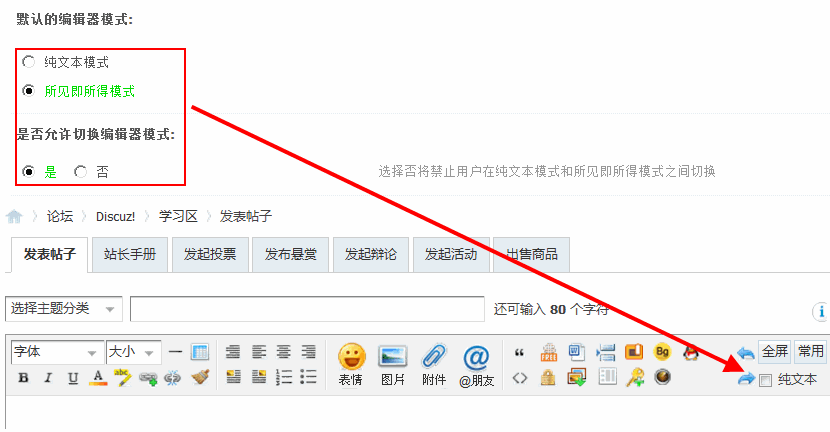
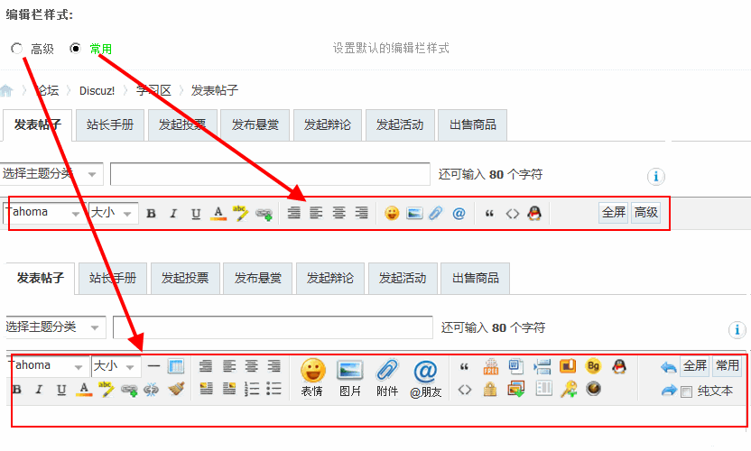
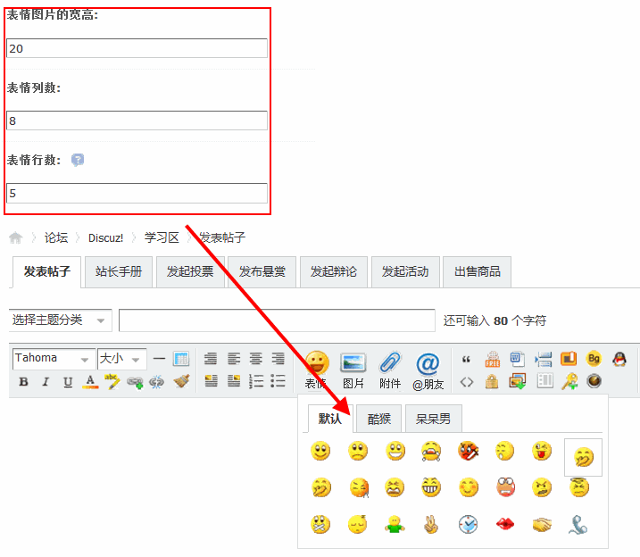
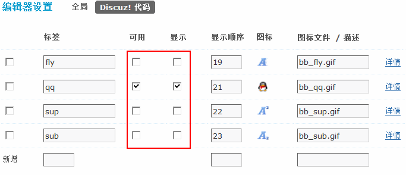
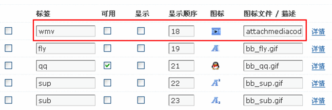
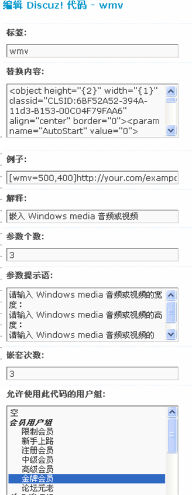
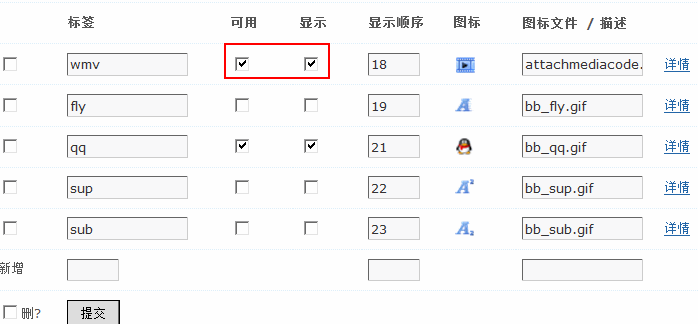

编辑器设置
Discuz! X3 版本中对帖子编辑器做了多处的人性化改进，除细节优化外，还增加了部分个性化设置，提高了发帖的舒适度。
帖子编辑器是所有会员进入到一个论坛中发帖、回帖必用的工具，编辑器的操作是否灵活，用起来是否方便也是可能会影响到论坛帖子质和量的因素之一。
操作路径：【后台】=>【界面】=>【编辑器设置】
一、全局设置
1、编辑器模式及切换
通过此三项设置，可以选择编辑器在前台的显示样式，几种模式及样式的显示如下：
 2、表情显示设置
此三项可设置发帖页面表示的显示参数，站长可根据自已的需要设置合适的数值。
表情图片的宽高：允许范围在 20～40 之间，图片实际尺寸超出设置值时将自动缩略显示。
表情列数：发帖页面表情显示的列数，允许范围在 8～12之间。
表情行数：发帖页面表情显示的行数。
二、Discuz! 代码
默认自带了 4 种 Discuz! 代码，可以在这里选择是否可用，是否显示，如果选择不显示那么该图标将不会显示在前台编辑器中。
在这里可以添加自定义 Discuz! 代码，填写新增 Discuz!代码的标签名，显示顺序和图标文件名后点击“提交”，如下图所示：
点击新增 Discuz! 代码后面的“详情”，即可详细设置该代码的各项参数，如下图所示：
设置完毕，点击“提交”添加成功。
然后设置可用并显示。
前台发帖即可看到，如下图所示：